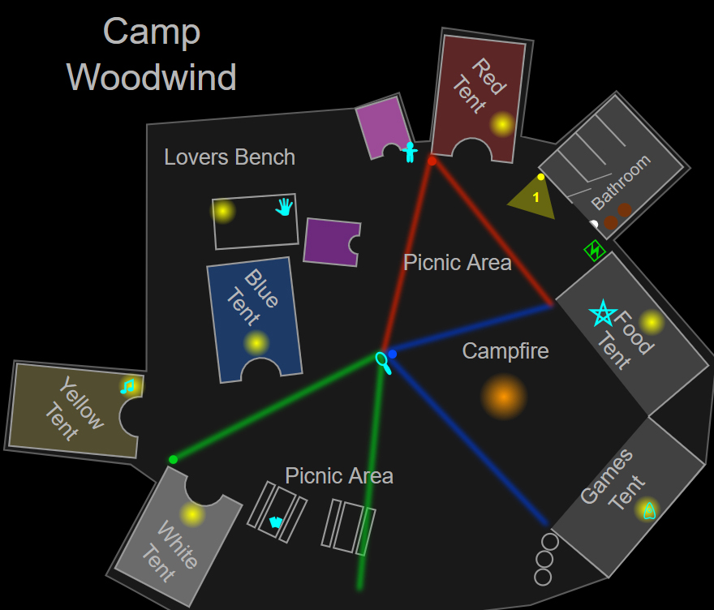

На этой карте такое же количество комнат, как и в доме 6 Tanglewood Drive, разве что вместо комнат здесь расположены палатки. Все палатки имеют выход к основной тропе, огибающей костёр по кругу, из-за чего локация кажется пугающе небольшой, а призрак всегда будет бродить рядом со входом в лагерь. Всего на локации четыре больших палатки: три из них сгруппированы около места для пикника, одна расположена около душевой. По правую руку от входа можно зажечь большой костёр. Кроме того, в задней части есть зона, похожая на навес, называемая «Скамейкой влюбленных». Возле самой дальней палатки можно поиграть в нарды, а также на недоступном освещённом участке, который ведёт дальше в лес. Также по всему лагерю можно заметить разбросанные игры на открытом воздухе. У костра есть только один вход, обращённый к главным воротам. Будьте осторожны, чтобы не загнать себя в угол во время охоты. От более быстрых призраков невозможно убежать, нарезая круги вокруг костра, так как он слишком маленький. Всегда отдавайте предпочтение грамотному побегу и сокрытию в маленьких палатках или укромных уголках.
Camp Woodwind
Camp Woodwind — небольшая карта в Phasmophobia. Она очень похожа на другой лагерь Maple Lodge Campsite, но имеет более скромные размеры: всего несколько палаток, пара ванных комнат и костёр. Данная локация открывается, когда игрок получает 19-й уровень.
Структура

Укрытия и стратегии
Всего на локации есть две небольшие палаточки и три укромных уголка из мебели, бочек и других предметов окружения. В зависимости от сложности и выставленных настроек часть из них или вообще все могут быть недоступны (заблокированы предметами или попросту отсутствовать).
- Большинство укрытий доступно на открытом воздухе, например, расположенные рядом друг с другом бочки или поставленные друг на друга контейнеры. В спешке нырять в ближайшую палатку может быть попросту опасно, так как призрак может начать их проверять.
- Единственная палатка, в которой можно безопасно спрятаться — это жёлтая палатка, в которой есть укромное место в правой её части из свёрнутых матов.
- Слева от душевой комнаты есть две небольшие палаточки, которые функционируют подобно небольшим палаточкам из Maple Lodge Campsite и являются надёжными укрытиями от охотящегося призрака.
- Прямо около входа, по правую руку, есть кольцо из бочек, которое может быть хорошим укрытием, особенно если игроки начинают расследование с низким рассудком, и охота может начаться до того, как они успеют рассредоточиться по локации.
- От призрака можно убегать по кругу. На локации есть один замкнутый путь, идущий вокруг дерева, синей палатки и небольшой беседки.
- Призрак с малым шансом будет проверять, не прячется ли игрок за открытыми укрытиями, например те же самые бочки справа от главного входа. Вероятно, это баг. Призрак по умолчанию не должен заходить в укрытия, если он не знает, что игрок там прячется.